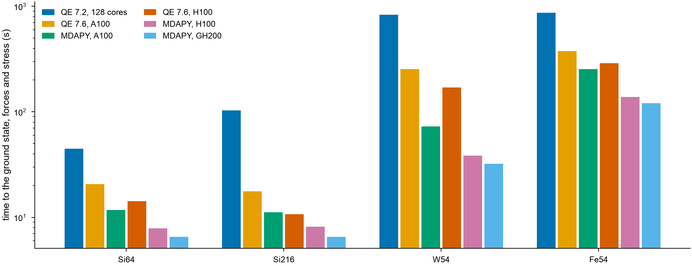

Plane-wave DFT¶
MDAPY's plane-wave DFT and Quantum ESPRESSO's
pw.x compute the same four configurations to their ground state, with the forces and
the stress: MDAPY on one GPU, pw.x on the same GPUs and on a whole node of processors.
Both take the same cells, pseudopotentials, cutoffs, meshes of k-points, smearing,
numbers of bands, first magnetic moments and functional, the PBE of Quantum ESPRESSO
("pbe_pw").
| Case | Atoms | Pseudopotentials | Cutoff (Ha) | Density cutoff (Ha) | k-points | Bands | Smearing, spin |
|---|---|---|---|---|---|---|---|
| Si64 | 64 | PseudoDojo 0.4, norm-conserving | 18 | 72 | 2 × 2 × 2, 8 | 141 | none |
| Si216 | 216 | PseudoDojo 0.4, norm-conserving | 18 | 72 | Γ | 476 | none |
| W54 | 54 | PseudoDojo 0.4, norm-conserving, 5s and 5p in the valence | 37 | 148 | 2 × 2 × 2, 8 | 454 | Marzari–Vanderbilt, 0.01 Ha |
| Fe54 | 54 | pslibrary 1.0.0, PAW, 3s and 3p in the valence | 35.5 | 248 | 2 × 2 × 2, 8 | 519 | Gaussian, 0.01 Ha; 2.5 μB per atom |
The cutoffs are the "normal" hints of PseudoDojo and the suggested minimum of the
pslibrary file; the numbers of bands are MDAPY's defaults, given to pw.x too.
Results¶
Nodes of the Triton cluster of Aalto University: an NVIDIA A100-SXM4-80GB, an NVIDIA H100 80GB HBM3 and an NVIDIA GH200 144G HBM3e (a Grace processor, aarch64), and two AMD EPYC 7713 of 64 cores each.
- MDAPY: branch
dft, built with CUDA 12.6.2 and GCC 13.3.0 (CUDA 12.9 and GCC 14 of conda-forge on the GH200). - Quantum ESPRESSO 7.6 on the GPUs, built for this comparison with the NVIDIA HPC SDK 23.9: CUDA Fortran and OpenACC, cuFFT, cuBLAS and cuSOLVER, one MPI process on one GPU.
- Quantum ESPRESSO 7.2 of the cluster on the processors (OpenBLAS, FFTW and ScaLAPACK), 128 MPI processes, as many pools of k-points as k-points.

The time of a whole run, from the start to the forces and the stress: lower is faster. Si216 runs at Γ alone, where both codes use real wavefunctions. Quantum ESPRESSO's Fe54 mixes with its local Thomas–Fermi screening, the only one of its mixings that converged.
Times¶
The time of a run in seconds, its steps of the self-consistent field, the time of a step, and the free energy against that of MDAPY on the H100.
| Case | Run | Steps | Time (s) | Per step (s) | ΔE (meV/atom) |
|---|---|---|---|---|---|
| Si64 | Quantum ESPRESSO 7.2, 128 cores | 13 | 44.6 | 3.43 | -0.001 |
| Si64 | Quantum ESPRESSO 7.6, A100 | 13 | 20.6 | 1.58 | 0.000 |
| Si64 | MDAPY, A100 | 9 | 11.8 | 1.31 | 0.000 |
| Si64 | Quantum ESPRESSO 7.6, H100 | 13 | 14.3 | 1.10 | 0.000 |
| Si64 | MDAPY, H100 | 9 | 7.9 | 0.87 | 0.000 |
| Si64 | MDAPY, GH200 | 9 | 6.5 | 0.73 | 0.000 |
| Si216 | Quantum ESPRESSO 7.2, 128 cores | 18 | 103.5 | 5.75 | -0.001 |
| Si216 | Quantum ESPRESSO 7.6, A100 | 18 | 17.7 | 0.98 | 0.000 |
| Si216 | MDAPY, A100 | 12 | 11.1 | 0.93 | 0.000 |
| Si216 | Quantum ESPRESSO 7.6, H100 | 18 | 10.7 | 0.59 | 0.000 |
| Si216 | MDAPY, H100 | 12 | 8.2 | 0.68 | 0.000 |
| Si216 | MDAPY, GH200 | 12 | 6.5 | 0.54 | 0.000 |
| W54 | Quantum ESPRESSO 7.2, 128 cores | 34 | 833.2 | 24.51 | -0.003 |
| W54 | Quantum ESPRESSO 7.6, A100 | 34 | 254.0 | 7.47 | 0.000 |
| W54 | MDAPY, A100 | 10 | 72.7 | 7.27 | 0.000 |
| W54 | Quantum ESPRESSO 7.6, H100 | 34 | 170.5 | 5.02 | 0.000 |
| W54 | MDAPY, H100 | 10 | 38.6 | 3.86 | 0.000 |
| W54 | MDAPY, GH200 | 10 | 32.2 | 3.22 | 0.000 |
| Fe54 | Quantum ESPRESSO 7.2, 128 cores | 30 | 867.5 | 28.92 | +0.220 |
| Fe54 | Quantum ESPRESSO 7.6, A100 | 31 | 376.4 | 12.14 | +0.112 |
| Fe54 | MDAPY, A100 | 31 | 254.2 | 8.20 | 0.000 |
| Fe54 | Quantum ESPRESSO 7.6, H100 | 31 | 288.8 | 9.32 | +0.112 |
| Fe54 | MDAPY, H100 | 31 | 138.0 | 4.45 | 0.000 |
| Fe54 | MDAPY, GH200 | 31 | 120.9 | 3.90 | 0.000 |
What they show¶
- On the same GPU MDAPY reaches the ground state 1.3 to 4.4 times as fast as Quantum ESPRESSO 7.6: 1.8 times for Si64 on the A100 and on the H100, 1.6 and 1.3 for Si216, 3.5 and 4.4 for W54, 1.5 and 2.1 for Fe54.
- A step of
pw.xtakes 0.9 to 1.3 times as long as one of MDAPY for silicon and tungsten, 1.5 to 2.1 times as long for the PAW iron with spin. - Fewer steps: MDAPY mixes the densities by Pulay's method in the metric of Kresse
and Furthmüller with Kerker's preconditioner, and converges W54 in 10 steps where
pw.xtakes 34 with its defaults, Si64 in 9 against 13, Si216 in 12 against 18. For Fe54 both take 31 steps,pw.xonce given its local Thomas–Fermi screening: its plain mixing of 0.7 diverges and that of 0.3 is not converged after 100 steps. - Against a node of processors, 128 cores running Quantum ESPRESSO 7.2, one A100 runs MDAPY 3.4 to 11 times as fast, one H100 6 to 22 times.
- The GH200 runs MDAPY 1.1 to 1.3 times as fast as the H100, the H100 1.4 to 1.9 times as fast as the A100.
- The energies agree with Quantum ESPRESSO 7.6 to 1e-3 meV per atom for silicon,
also where both take real wavefunctions at Γ, and for tungsten. For iron they differ by
0.11 meV per atom: Quantum ESPRESSO's PBE with spin takes the γ of its correlation as
0.031091 where PBE has (1 − ln 2)/π², which moves its energy by 4e-6 Ha per atom of
iron; the comparisons of the tests take that difference
into account and then agree to 1e-7 Ha. Quantum ESPRESSO 7.2 differs from 7.6 by
another 0.1 meV per atom for this PAW iron. With
"pbe", the constants of libxc, MDAPY's energies would move by 0.01 to 0.25 meV per atom.
On several GPUs¶
With comm, the processes of one configuration share its pairs of spin and k-point,
one GPU each (Many GPUs). On a node of four
NVIDIA Tesla V100-PCIE-32GB, the processes started by the mpiexec of MPICH 5.0.2 from
PyPI:
| Case | Pairs of spin and k-point | 1 GPU (s) | 2 GPUs (s) | 4 GPUs (s) | Speedup on 4 |
|---|---|---|---|---|---|
| W54 | 8 | 155.3 | 81.4 | 43.8 | 3.5 |
| Fe54 | 16 | 548.8 | 295.8 | 171.4 | 3.2 |
The energies are the same to the last digit printed, 1e-6 eV. What the processes do not share, the density on the grid, the mixing and, for PAW, the one-center terms of every atom, every process does in full; it takes the rest of the time.
Memory¶
What the DFT holds on the GPU, for cells of a training set: fcc aluminium at 600 eV and
a kspacing of 0.15 1/Å, bcc iron with spin (3 μB per atom) at 900 eV and 0.2 1/Å,
Marzari–Vanderbilt smearing of 0.25 eV, PseudoDojo 0.4 norm-conserving
pseudopotentials, every cell perturbed (each atom displaced by 0.05 Å, the box strained
by up to 1 %) so that time reversal alone reduces its k-points. "In use" is the peak of
the arrays of the DFT, the high-water mark of its memory pool; "on the GPU" the peak of
the memory in use on the device, polled every 0.2 s, with the CUDA context and the
libraries. On the GH200, with the libraries of the vendor (kernels="vendor"), the second
of three cells in a row on one calculator:
| Cell | k-points × spins | Bands | Grid | In use (GiB) | On the GPU (GiB) | Time (s) |
|---|---|---|---|---|---|---|
| Al4 | 666 × 1 | 10 | 36 × 36 × 36 | 0.4 | 4.4 | 4.6 |
| Al32 | 112 × 1 | 58 | 72 × 72 × 64 | 2.4 | 3.5 | 31.7 |
| Al32, mixed precision | 112 × 1 | 58 | 72 × 72 × 64 | 2.6 | 3.8 | 30.6 |
| Al108, Γ | 1 × 1 | 195 | 96 × 100 × 100 | 2.6 | 3.6 | 2.4 |
| Al108 | 36 × 1 | 195 | 96 × 100 × 100 | 10.3 | 11.4 | 92.4 |
| Fe16 | 112 × 2 | 154 | 60 × 60 × 60 | 6.4 | 7.8 | 87.6 |
| Fe16, mixed precision | 112 × 2 | 154 | 60 × 60 × 60 | 6.8 | 8.5 | 80.8 |
| Fe54 | 36 × 2 | 519 | 90 × 90 × 90 | 25.0 | 26.8 | 254.2 |
Fe54 is the first and only cell of its process. Side by side, from threads of one process, each with a calculator of its own:
| Cells at once | GPU | In use (GiB) | On the GPU (GiB) |
|---|---|---|---|
| 2 Al32 | GH200 | 4.8 | 6.4 |
| 4 Al32 | GH200 | 9.7 | 13.7 |
| 8 Al32 | GH200 | 19.2 | 23.7 |
| 2 Al108 | GH200 | 20.4 | 22.0 |
| 4 Al108 | GH200 | 40.6 | 44.2 |
| 8 Al32 | V100 of 32 GB | 19.2 | 20.3 |
| 16 Al32, 8 of them out of memory | V100 of 32 GB | 31.2 | 31.7 |
- The bands of every k-point and spin take most of the memory of a cell of many k-points: about 6.2 GiB of the 10.3 of Al108, 21 of the 25 of Fe54. Al108 at Γ, one k-point of real bands on half the plane waves, holds a quarter of Al108 on its mesh.
- The libraries of the vendor and the CUDA context hold the rest of what is on the GPU: the context about 0.55 GiB on the GH200 (0.3 on the V100), and for each host thread that solves k-points a handle of cuSOLVER (0.28 GiB on the GH200, 0.04 on the V100) and two of cuBLAS (0.06 GiB each, 0.008 on the V100). Al4 runs eight, and holds 3.4 GiB of libraries for 0.4 GiB of arrays.
- Mixed precision holds 5 to 10 % more than double.
- Side by side, the cells hold the sum of theirs. Eight Al32 fit a V100 of 32 GB; sixteen need 38 GiB of arrays, and eight of them ran out of memory. Sixteen Al4 hold 6.2 GiB of arrays and 13.8 GiB on a V100.
- After a run the pool keeps what its steps used and gives the rest back to the device: after eight Al32 at once it keeps 2.4 GiB, and an Al108 at Γ that follows in the same process holds 3.5 GiB on the GPU.
- Fe54 at a kspacing of 0.2 1/Å holds 25 GiB, more than a GPU of 12 GB has, however the memory is managed: 21 GiB are its bands, 72 pairs of k-point and spin of 519 bands. With MDAPY's kernels, on a mesh of 2 × 2 × 2 (8 k-points) it holds 8.6 GiB of arrays, 9.4 GiB in its pool, and runs on an RTX A2000 of 12 GB; the perfect crystal, whose symmetry leaves 10 of the k-points of 0.2 1/Å, holds 9.8 GiB, 10.5 GiB in its pool.
How it was measured¶
- The cells are perfect crystals, 2 × 2 × 2 and 3 × 3 × 3 cubic cells of silicon (a = 5.431 Å), 3 × 3 × 3 of bcc tungsten (3.17 Å) and of bcc iron (2.83 Å), every fractional coordinate moved by a normal draw of 0.003 (seed 0), so that neither code finds a symmetry beyond time reversal.
- MDAPY stops when the energy changes by less than 1e-6 eV and the Hartree energy of the
change of the density is below 1e-7 Ha;
pw.xwhen its estimated error of the energy is below 1e-8 Ry. - MDAPY mixes with its defaults: 0.7 of the residual, Kerker's preconditioner of
1.5 1/Å, 1.6 of the residual of the magnetization.
pw.xmixes with 0.7 of the residual, its default, and for Fe54 0.3 withmixing_mode = 'local-TF'. - Si216:
pw.xwithK_POINTS gamma, its real wavefunctions; with complex ones it took 39.7 s on the A100, 23.0 s on the H100 and 240 s on the processors. MDAPY's bands are real at Γ by default. - The time of MDAPY is that of the whole call of the self-consistent field, from the
pseudopotentials read to the forces and the stress; that of
pw.x, its wall time. - Quantum ESPRESSO runs 7.6 on the GPUs and 7.2 on the processors: its GPU build needs the NVIDIA HPC SDK and was made for this comparison, while 7.2 is the build of the cluster, tuned for its processors.
Running it¶
The comparison is benchmarks/dft_performance.py in the source repository. It downloads
the pseudopotentials, writes the inputs of pw.x, runs MDAPY, reads the outputs of
pw.x and draws the figure:
python benchmarks/dft_performance.py prepare perf
python benchmarks/dft_performance.py mdapy perf Fe54 a100 # one case on the GPU
cd perf/qe && mpirun -np 1 pw.x -in Fe54-tf.in > Fe54-tf-a100.out && cd ../..
python benchmarks/dft_performance.py qe perf Fe54 perf/qe/Fe54-tf-a100.out qe-a100
python benchmarks/dft_performance.py report perf
python benchmarks/dft_performance.py figure perf dft.png "qe-a100=QE, A100" "a100=MDAPY, A100"
On several GPUs, one process each:
The memory is benchmarks/dft_memory.py, with the PseudoDojo files Al.upf and
Fe.upf in a folder: